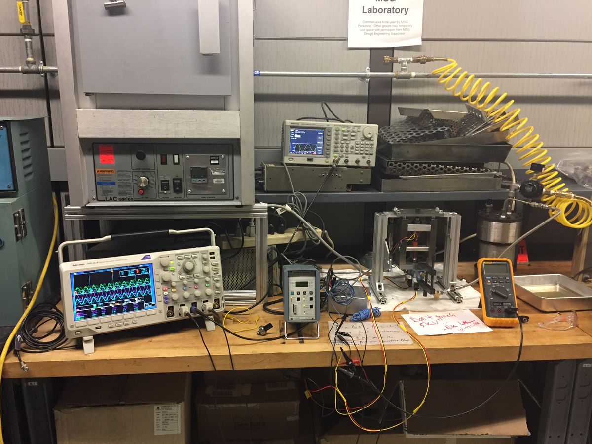
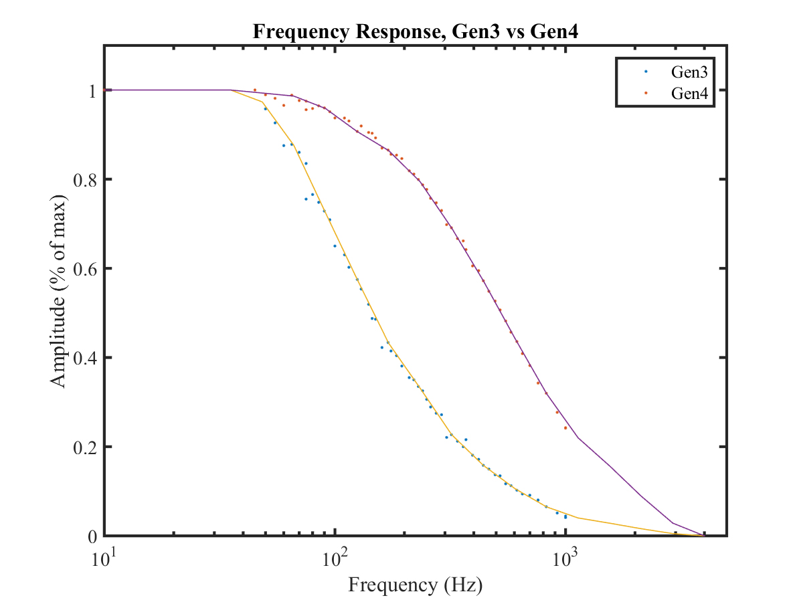

Piezo-resistive Amplified High Speed Pressure Cycler

Summary
I developed a system of pressure cycling that would enable me to high speed pressure cycle far in excess of Sensata’s typical pressure cycling frequencies. Most pressure cycling at Sensata took place <10 Hz, but the cycler I built was capable of cycling at up to 5kHz. A customer approached us with a test that would require 400M cycles. Normally this test would take years to run, and so to save millions of dollars in non-recurring engineering cost, I developed this cycler.
As an expansion, I was able to run mechanical resonant frequency analysis using the piezo actuator, which enabled Sensata, for the first time, to mechanically characterize the frequency response of a sensor and generate useful data to empirically derive their true mechanical transfer function.
Photos
 Fig. 1: Full system in use, visuals of the oscilloscopes, amplifier, electromechanical-fluidic system, and the key innovation of a fluid accumulator that would bleed small amounts of fluid into the system via a repurposed snubber to replenish fluid leaking out past the dynamic piston seal. The snubber served as a pressure barrier, so, despite cycling rapidly on the system side, it would create an artificial pressure wall due to the significant L/d ratio of the micro-orifice. See Pouiseuille’s Law for more details.
 Fig. 2: Close-up of the pressure cycler interface, a 120um displacement stack of ceramic piezoactuators was used to mechanically actuate a piston, displacement induced by 10kV amplitude sine wave. The piston would repeatedly compress a small volume of fluid which the pressure sensor under test and the Kistler reference pressure would simultaneously measure.
Fig. 2: Close-up of the pressure cycler interface, a 120um displacement stack of ceramic piezoactuators was used to mechanically actuate a piston, displacement induced by 10kV amplitude sine wave. The piston would repeatedly compress a small volume of fluid which the pressure sensor under test and the Kistler reference pressure would simultaneously measure.
 Fig. 3: Following the poster session, I spent time conducting additional testing to gather enough data to normalize the sensor outputs. Each dot on this plot represents a discrete sampling at a particular frequency. A Fast Fourier Transform is conducted on each subset of data at every frequency tested, and the aggregate of every transform is plotted here using a MATLAB script. The digital filtering (Low Pass Filter emulation) built into the ASIC of the Gen4 sensor dampens response compared to the Gen3 ASIC that does not have this feature.